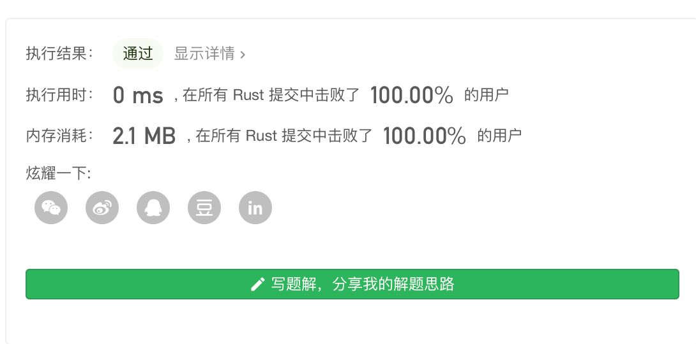
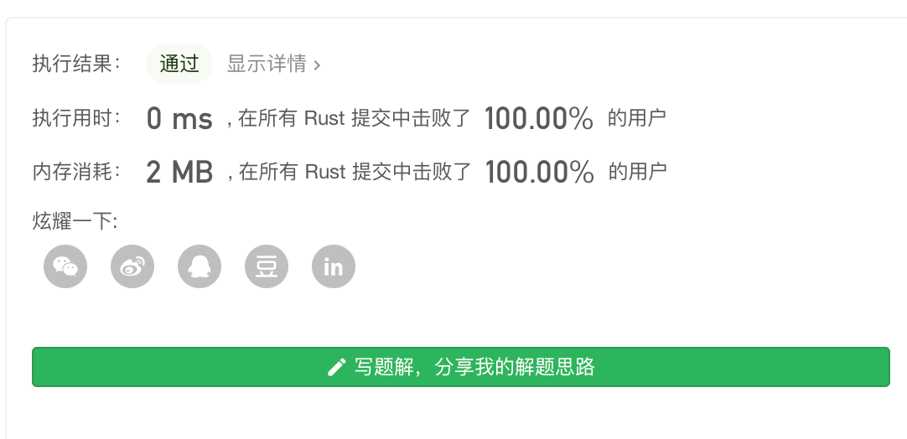

Leetcode第71题 简化路径
以 Unix 风格给出一个文件的绝对路径，你需要简化它。或者换句话说，将其转换为规范路径。
在 Unix 风格的文件系统中，一个点（.）表示当前目录本身；此外，两个点 （..） 表示将目录切换到上一级（指向父目录）；两者都可以是复杂相对路径的组成部分。更多信息请参阅：Linux / Unix中的绝对路径 vs 相对路径
请注意，返回的规范路径必须始终以斜杠 / 开头，并且两个目录名之间必须只有一个斜杠 /。最后一个目录名（如果存在）不能以 / 结尾。此外，规范路径必须是表示绝对路径的最短字符串。
示例 1：
输入："/home/" 输出："/home" 解释：注意，最后一个目录名后面没有斜杠。
示例 2：
输入："/../" 输出："/" 解释：从根目录向上一级是不可行的，因为根是你可以到达的最高级。
示例 3：
输入："/home//foo/" 输出："/home/foo" 解释：在规范路径中，多个连续斜杠需要用一个斜杠替换。
示例 4：
输入："/a/./b/../../c/" 输出："/c"
示例 5：
输入："/a/../../b/../c//.//" 输出："/c"
示例 6：
输入："/a//b////c/d//././/.." 输出："/a/b/c"
补充知识
文件路径分为 绝对路径和 相对路径
什么是路径?
在一个操作系统的文件系统中，路径是到达一个文件或一个目录的一条唯一的路线。到达一个文件的路径是由‘/’以及字母-数字组成的。
什么是绝对路径? **
绝对路径被定义为从根目录开始的一条通向文件或目录的路径。换句话说，绝对路径即从实际文件系统的/目录开始的一条完整路径。（译者注：绝对路径是唯一的）
什么是相对路径?
相对路径被定义为跟当前工作路径（pwd）有关的路径。假设我目前处于/var/log 然后我想切换/var/log/kernel 这个目录下。我可以使用相对路径的概念切换到kernel目录下
解题思路
标准的 路径 应该是以 /开头 另一个 /作为结尾的。
可能会出现的符号
有 /. 表示当前目录
/.. 表示上一层目录
/* 表示当前目录下的某一个目录
我们 可以从前往后也可以从后往前的出来这个路径,但是从后往前比较容易
比如 你遇到 /home/.. 从前往后 你要把/home 路径先加上 然后 碰到/.. 你再要把 home 路径 截掉,但是从后往前 我们直接跳过 就好了。
另一种思路是,从前往后 可以用栈的思路, 如果遇到 .. 就出栈,入到 . 就不管了 ,遇到目录就压栈。
分割路径 + 反向遍历
所以 我们的思路是从后往前,
我们先把 路径 通过 "/" 分割 ,那么 路径 然后我们再 把所有路径可能的情况处理下就好了,
假如 遇到 "." 表示当前路径 ,遇到这种情况 我们直接跳过就好了,当前路径没有什么意义。
假如 遇到 ".." 就表示上级目录 举个例子 /home/.." 如果分割 好了后 就是 ["/home","/.."] 那么我们此时 由于是从后遍历 遇到 .. 就相当于计次 跳过一次 xxx 这样的目录。
假如遇到 "xxx" 就是一个目录 我们就直接 把 它加到 最终返回的路径的数组中
最后 处理完了 如果为 "" 的话 默认返回 "/",然后把目录从后往前拼接起来。
use std::ops::Add; pub fn simplify_path(path: String) -> String { let splits: Vec<&str> = path.split("/").collect(); let mut tmp:Vec<String> = Vec::with_capacity(path.len()); let pathlen = splits.len() -1; let mut index = 0; let mut skip = 0; loop{ if index >= pathlen{ break; } //反相遍历 match *splits.get(pathlen - index).unwrap() { val if val == ".." => { skip +=1;}, //处理上级目录 比如/home/.. skip计数器 + 1直接跳过home目录 val if val == "." => {},//当前目录 不做任何 处理 val if val != "" =>{ if skip ==0 { let val = String::from("/").add(val); //这里每次都是 插入0 号位置 更好的方法直接push tmp.push( val); }else { //如果之前遇到过 ../ 跳过目录 skip计数器 -1 skip -=1; } }, val => {}, // /a//如果是 //这种形式 分割 完后会有 ""字符串直接忽略 } index +=1;//循环下一段路径 } if tmp.is_empty(){ tmp.push("/".parse().unwrap()); } let mut res = String::with_capacity(path.len()); //把字符串 tmp数组里的 字符串拼起来 for i in 1..=tmp.len(){ res += tmp[tmp.len() - i].as_ref(); } res } fn main() { println!("ouputFile {:?}",simplify_path(String::from("/a/../../b/../c//.//"))); }
算法复杂度：O(n)
时间复杂度：O(n)
路径分割 + 栈
这种方法 我们模拟栈的操作 ,这种方法在书写实现和性能上,都会优于上一种。
当遇到 正常路径 "xxx" 我们把目录 压栈
当遇到 ".." 我们弹出栈
当遇到 "." 我们跳过
当遇到 "" 我们跳过
use std::ops::Add; pub fn simplify_path(path: String) -> String { let paths:Vec<&str> = path.split("/").collect(); let mut m_stack = Vec::with_capacity(paths.len()); for i in 0..paths.len(){ match paths[i] { val if val == ".." =>{ if m_stack.is_empty(){continue}; m_stack.pop();} val if val == "." =>{continue} val if val != "" =>{m_stack.push(String::from("/").add(val));} val =>{}, } } if m_stack.is_empty(){ m_stack.push("/".to_string()); } m_stack.iter().map(|x|x).map(|x| x.to_string()).collect() } fn main() { println!("ouputFile {:?}",simplify_path(String::from("/../"))); }
算法复杂度：O(n)
时间复杂度：O(n)
